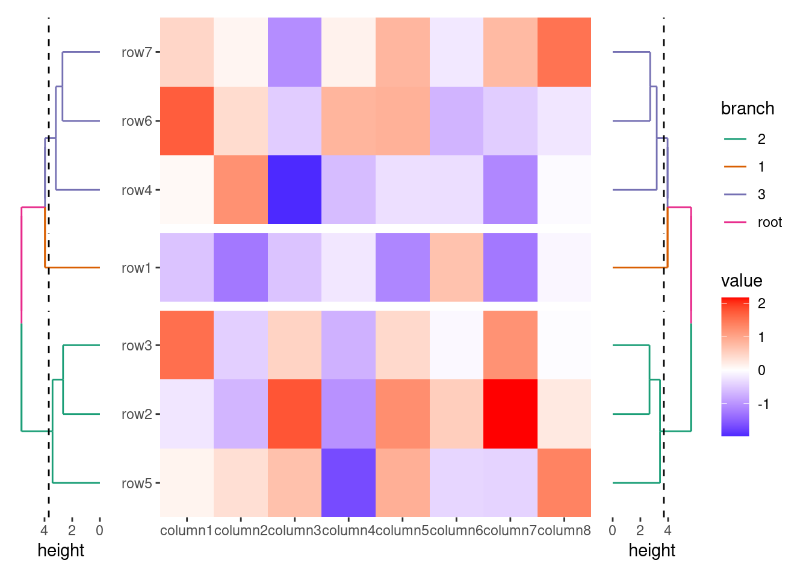
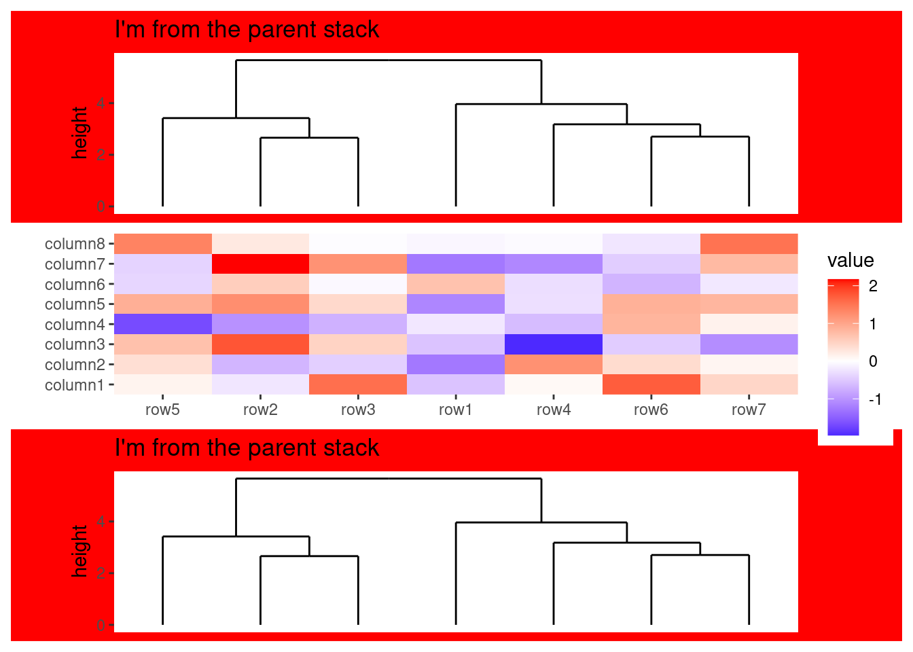
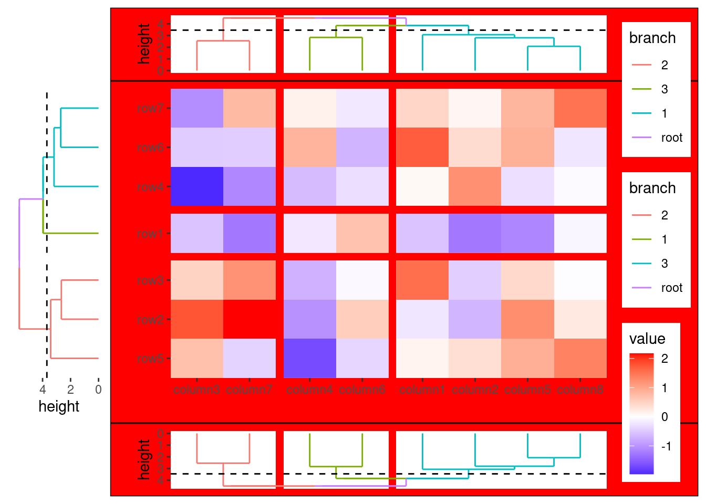
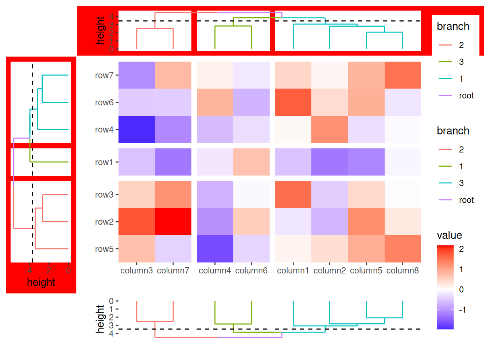

In ggalign, operators are used to manage and manipulate the plot elements in various layouts. These operators help you build complex visualizations by adding, or modifying elements across multiple plots in a layout. You may be familiar with the + and & operators, this section will expand on their usage, as well as introduce the subtraction operator (-) and how to apply it in different contexts.
Addition Operator (+): Adds elements to the active plot in the active layout.
Logical AND Operator (&): Applies elements to all plots in the layout.
Subtraction Operator (-): Allows you to add elements or modify them across multiple plots in the layout
Code
library(ggalign)#> Loading required package: ggplot2#> #> Attaching package: 'ggalign'#> The following object is masked from 'package:ggplot2':#> #> element_polygonset.seed(123)small_mat<-matrix(rnorm(56), nrow =7)rownames(small_mat)<-paste0("row", seq_len(nrow(small_mat)))colnames(small_mat)<-paste0("column", seq_len(ncol(small_mat)))
14.1 Addition Operator
+: adds elements to the active plot in the active layout.
The + operator is straightforward and should be used as needed.
In stack_layout(), a nested layout will only occur if you pass a quad_layout() into stack_layout() (?sec-multiple-quad-layouts). If the active context in the stack_layout() is quad_layout(), this quad_layout() is treated as the active layout, and the + operator will add elements to it, following the same principles as in quad_layout(). Otherwise, the stack_layout() itself is treated as the active layout, and the + operator will add elements directly to this plot.
In quad_layout(), four nested layouts are available for annotations: top, left, bottom, and right. If no active annotation is set, quad_layout() treat itself as the active layout. Since there is only one main plot in the quad_layout(), the main plot is always treated as the active plot in this context. Otherwise, the active annotation is treated as the active layout, and the + operator will add elements to it, following the same principles as in stack_layout().
&: applies elements to all plots in the layout including plots in the nested layout.
The & operator works similarly to patchwork, applying an element across all plots in a layout. Since & has lower precedence than +, it’s generally best to use it at the end of an expression or you should wrap it in parentheses when needed.
# Initialize the heatmapggheatmap(small_mat)+# initialize the left annotationanno_left(size =0.2)+# Add a dendrogram in the left annotation and split the dendrogram into 3 groupsalign_dendro(aes(color =branch), k =3L)+anno_right(size =0.2)+# Add a dendrogram in the right annotation and split the dendrogram into 3 groupsalign_dendro(aes(color =branch), k =3L)&# Set color scale for all plotsscale_color_brewer(palette ="Dark2")#> → heatmap built with `geom_tile()`

14.3 Subtraction Operator
The - operator is more powerful than the & operator, enabling flexible addition of elements to multiple plots. While its use might initially seem unintuitive, the reason behind this is that - shares the same precedence group as +, which allows it to seamlessly combine with +.
14.3.1quad_layout()
For ggheatmap()/quad_layout(), if the active context is the ggheatmap()/quad_layout() itself (no active annotation), the - operator behaves similarly to &. It applies the specified elements to all plots within the layout.
# Initialize the heatmapggheatmap(small_mat)+# initialize the left annotationanno_left(size =0.2)+align_dendro(aes(color =branch), k =3L)+anno_right(size =0.2)+align_dendro(aes(color =branch), k =3L)+# Remove any active annotationquad_active()-# Set color scale for all plots, since the active layout is the `ggheatmap()`/`quad_layout()`scale_color_brewer(palette ="Dark2")#> → heatmap built with `geom_tile()`
If the active layout is an annotation stack, the - operator will only add the elements to all plots in the active annotation stack:
ggheatmap(small_mat)+# initialize the left annotationanno_left(size =0.2)+align_dendro(aes(color =branch), k =3L)+align_dendro(aes(color =branch), k =3L)-# Modify the the color scales of all plots in the left annotationscale_color_brewer(palette ="Dark2")#> → heatmap built with `geom_tile()`
stack_alignv(small_mat)+align_dendro()+ggtitle("I'm from the parent stack")+ggheatmap()+# remove any active contextstack_active()+align_dendro()+ggtitle("I'm from the parent stack")-# Modify the the color scales of all plots in the stack layout except the heatmap layoutscale_color_brewer(palette ="Dark2")-# set the background of all plots in the stack layout except the heatmap layouttheme(plot.background =element_rect(fill ="red"))#> → heatmap built with `geom_tile()`

When the active layout is the nested ggheatmap()/quad_layout(), the - operator applies the elements to this nested layout, following the same principles as in the Section 14.3.1.
The quad_scope() function adjusts the context in which elements are applied in ggheatmap()/quad_layout(). It allows you to control how objects such as themes, scales, and other plot elements are applied to specific annotation stacks or the main plot, without changing the currently active context.
This function accepts two arguments:
x: An object which can be added to the plot.
position: A string containing one or more of "t", "l", "b", "r", and "i" specifies the context for applying x.
Default Behavior by wrapping object with quad_scope():
When the active annotation stack is set, quad_scope() ensures the applied object also modifies:
The active annotation stack.
The main plot.
By wrapping object with quad_scope(), the + operator will apply the object not only to the active plot in the annotation stack, but also to the main plot.
ggheatmap(small_mat)+# initialize the left annotationanno_left(size =0.2)+align_dendro()+# apply the object not only to the active plot in the annotation stack, but# also to the main plotquad_scope(theme(plot.background =element_rect(fill ="red")))#> → heatmap built with `geom_tile()`
By wrapping object with quad_scope(), the - operator will apply the object not only to the active plot in the annotation stack, but also to the main plot.
ggheatmap(small_mat)+# initialize the left annotationanno_left(size =0.2)+align_dendro(aes(color =branch), k =3L)+# Change the active layout to the left annotationanno_top(size =0.2)+align_dendro(aes(color =branch), k =3L)+anno_bottom(size =0.2)+align_dendro(aes(color =branch), k =3L)-# Modify the theme of all plots in the bottom annotation in this way, and# the main plotquad_scope(theme(plot.background =element_rect(fill ="red")))#> → heatmap built with `geom_tile()`

The position argument can be a string containing one or more of "t", "l", "b", "r", and "i", indicating which annotation stack should be used as the context or if it should be applied to the main plot.
ggheatmap(small_mat)+# initialize the left annotationanno_left(size =0.2)+align_dendro(aes(color =branch), k =3L)+# initialize the top annotationanno_top(size =0.2)+align_dendro(aes(color =branch), k =3L)+# initialize the bottom annotationanno_bottom(size =0.2)+align_dendro(aes(color =branch), k =3L)-# Modify the background of all plots in the left and top annotationquad_scope(theme(plot.background =element_rect(fill ="red")), "tl")#> → heatmap built with `geom_tile()`

The position argument can also be NULL, which behaves as if no annotation is active.
ggheatmap(small_mat)+# initialize the left annotationanno_left(size =0.2)+align_dendro(aes(color =branch), k =3L)+# initialize the top annotationanno_top(size =0.2)+align_dendro(aes(color =branch), k =3L)+# initialize the bottom annotationanno_bottom(size =0.2)+align_dendro(aes(color =branch), k =3L)-# Modify the background of all plotsquad_scope(theme(plot.background =element_rect(fill ="red")), NULL)#> → heatmap built with `geom_tile()`